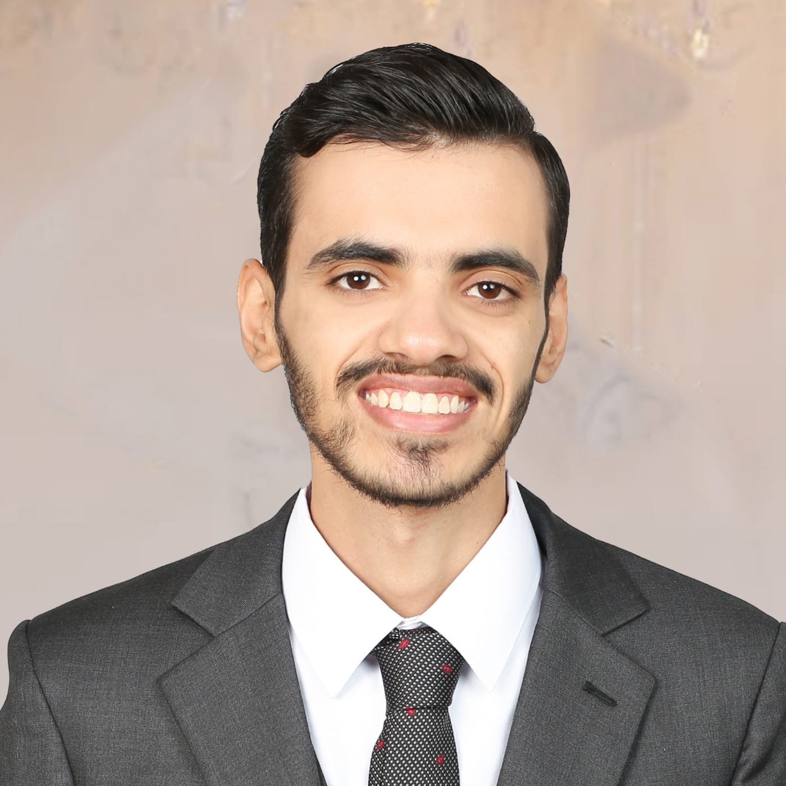

Mathematician
Graduate student, The University of Jordan
B.Sc. in Mathematics, Al-Hussein Bin Talal University
Email: abdullah.aljazy@yahoo.com
Links: GitHub |
LinkedIn |
MathOverflow |
ResearchGate |
X (Twitter) |
YouTube
Telegram: Personal channel |
Algebraic Geometry channel
My name is Abdullah M. Al-jazy. I am a graduate student at The University of Jordan. I received my B.Sc. in Mathematics from Al-Hussein Bin Talal University (AHU) in Ma'an (معان), Jordan. I am deeply passionate about pure mathematics, particularly Analytic Number Theory, Computational Number Theory, and the Langlands Program. My journey in mathematics has been fueled by curiosity and a desire to uncover the elegant structures that connect seemingly disparate areas of the subject.
I aspire to contribute to the mathematical community by exploring challenging problems and engaging in collaborative research. Beyond mathematics, I value intellectual discussions, the exchange of ideas, and the opportunity to mentor or inspire others to pursue their academic goals.
In the future, I hope to advance my studies, bridging my interests with practical applications and theoretical discoveries. I also aim to inspire younger students to see the beauty and depth of mathematics as a universal language of understanding.